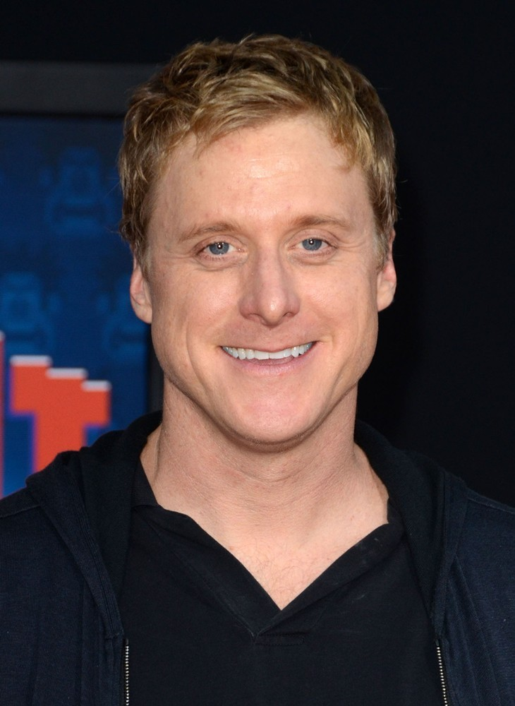

Rogue One
PG-13 | 2h 13 min | Action,Adventure,Sci-Fi, 2016
8,1/10

As the rebellion captures and spreads its influence among people,the Galactic empire builds a super weapon cab able to destroy a whole planet. So the rebellion sent a group of rebels to steal plans that hide secrets how to destroy this weapon of mass destruction The Rebel Alliance makes a risky move to steal the plans for the Death Star, setting up the epic saga to follow.
The film, which began production in August 2015, is set between Revenge of the Sith and Star Wars: Episode IV A New Hope
Cast
 Felicity Jones
Felicity Jones
 Diego Luna
Diego Luna
Alan Tudyk
Donnie Yen